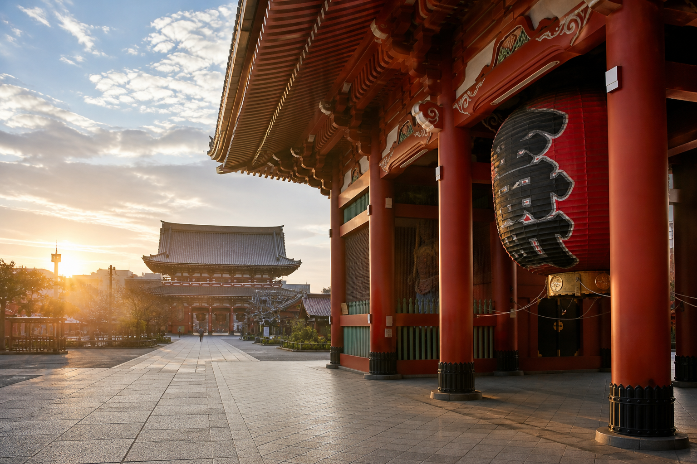

DAY 06 · 8/21 FRIDAY
清晨淺草
與最後採買
先退房寄放行李，用清晨低人潮完成淺草寺中軸線，回到上野採買後直接前往成田機場。
ROUTE
移動動線
飯店退房、寄放行李
護照、機票與貴重物品隨身攜帶。
東京 Metro 銀座線
上野 → 淺草
先到淺草文化觀光中心前拍雷門全景。
雷門 → 仲見世 → 寶藏門 → 本堂
沿寺院中軸單向前進；清晨商店未全開，但最適合拍照。
淺草寺周邊 → 上野阿美橫町
回上野後集中完成藥妝、零食與伴手禮採買。
飯店取行李 → 京成上野
預留走路、領行李與車站找月台的緩衝。
SKYLINER
京成上野 → 成田機場
依航空公司確認第一或第二航廈，國際線保留至少三小時。